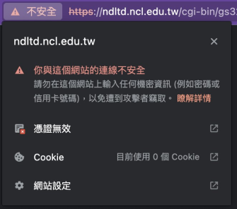
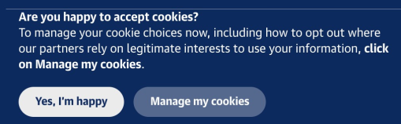

使用情境
- 擔心 方便但有隱憂的 Cookie：為什麼大部分網站只要輸入一次帳號密碼，之後就不用再頻繁登入？
- 怕被數位指紋辨識你的輪廓：什麼都還沒輸入，但是網站就知道你的位置、語言、正在使用的裝置？
- 不想讓毫無保護的 HTTP 連線洩露你的資料：為什麼有時候會跳出 HTTP 未加密警告？ 
- 如何比較瀏覽器？
- 穩定
- 更新快速
- 非營利
- 中文翻譯完善
- 更新快速
- 額外阻止各式商業追蹤
- 非營利
- 在特定條件可隱藏上網位置，但在極權國家使用這個功能可能會被鎖定
- 非營利
- 最多人使用，駭客的熱門目標
- 更新快速
- 系統內建
- 系統內建
為了減少每次登入都要輸入一堆資訊造成的困擾，現在絕大多數的網站都會使用叫做 Cookie 的技術，就像沿路灑餅乾(Cookie) 屑的知道你的每一步，變相將使用者在網站內已經登入的帳號資訊、購物車清單、去過哪些網站的瀏覽紀錄，甚至是上傳的圖片、影音檔案，暫時存放在瀏覽器軟體在電腦裡面的某個資料夾。當你第一次造訪網站的時候，通常會被詢問是否開啟 Cookie，意思就是使用這個網站會紀錄你的各式資訊。
需要使用的時候，網站會直接跟瀏覽器索取資訊，使用者就不必重複做一樣的登入或購買動作。但是，這個方便的功能也可能被濫用，例如你的網站瀏覽紀錄，會成為廣告商瞭解你最近去過哪裡、需要什麼、曾經使用過哪些網路服務的依據。輕微的狀況可能是你曾經搜尋一次「蘋果電腦」，接下來所有網站的廣告都會問你是不是想買電腦、要不要買更多周邊產品。嚴重的情況可能是這些 cookie 被用來鎖定你的身份與位置，甚至由駭客從電腦裡偷走 cookie ，取得你的帳號資訊與檔案。
數位指紋追蹤技術比 Cookie 更過分，它甚至不需要詢問你的同意，就會將你正在瀏覽網站的裝置資訊、作業系統、瀏覽器、螢幕大小、時區、字體、語言等等足以辨識使用者身份的資訊交給網站的追蹤器。
當你瀏覽過越多網站，追蹤器對你的瞭解就越多。同樣地，這些資訊可以用來給廣告商投放更可能說服你的精準廣告，但也可以被極權單位用來掌握異議人士的身份位置。
也許你有些時候會在瀏覽網站會被警告不安全連線，並且會在網址左方顯示鎖頭被劃掉的符號，這經常是指網站與你之間的連線過程並沒有提供加密保護。如果是沒有加密保護的 HTTP ，你的滑鼠移動位置、輸入的帳號密碼或金融資料皆毫不遮掩地分享給網路上的所有人，例如同一間會議室、教室、咖啡廳的其他人，當然也包含駭客。
前述的 Cookie 或數位指紋追蹤都還要經過搜集與比對，相較之下，任何在這種沒有連線保護措施的網站裡面進行的瀏覽行為、輸入的內容，都能直接被別人看到、即時偷走。這對於注重安全及隱私的使用者而言，絕對是要避免的情形。這最好要在瀏覽器就強制開啟 HTTPS 才能保障傳輸過程有加密保護，不至於在任何一次疏忽，就將關鍵資料交出去。
當你希望自己或同事可以防堵以上洩露資訊的管道，尤其是別讓惡意監控者可以竊取工作過程的內容，那就必須嚴格挑選瀏覽器。請見我們以下的比較表：
| 保護並能在關閉時刪除 Cookie | 嚴格阻擋指紋追蹤 | 強制使用 HTTPS 加密 | 特點 | |
|---|---|---|---|---|
|
Firefox |
有 | 無 | 有 |
|
|
Brave |
有 | 無 | 有 |
|
|
Librewolf |
有 | 有 | 有 |
|
|
Tor |
有 | 有 | 有 |
|
|
Chrome |
無 | 無 | 無 |
|
|
Safari |
無 | 有 | 無 |
|
 Edge |
無 | 無 | 無 |
|
總之，「別將雞蛋放在同一個籃子，瀏覽器就是那個籃子！」
當然，只要你願意多花時間，前述的每個瀏覽器都有額外加裝外掛、提升保護能力的空間，成為萬用的瀏覽器。不過，我們都知道不該把所有雞蛋都放在同一個籃子裡，承載我們重要數位資料的瀏覽器亦然。如果只用同一個瀏覽器進行生活娛樂、日常工作、機密通訊的所有事情，那就仍有可能因為一個被駭客發現的漏洞導致全盤皆失。
真正能分散風險的做法，是將不同性質與需要的事情交給不同的數位裝置，但尋常人在經費有限的情況下，很難分別為了生活娛樂、日常工作、機密通訊購買三個不同的設備。即使買得起，也很難帶著它們移動。
因此，將這些不同性質與需要的事情分別在不同的瀏覽器上頭使用，是個折衷的做法。例如，最無關緊要的生活娛樂交給瀏覽器Ａ、日常工作處理的業務只在瀏覽器Ｂ進行、僅在需要進行機密通訊的時候開啟瀏覽器Ｃ。這樣就能簡單分割你在網路上各處留下的足跡，不會累積在同一個瀏覽器裡面，也不會輕易被同時監視多個網站的追蹤器將你的娛樂帳號、工作帳號、機密帳號辨識為同一個人。
使用方式
每一個廠牌的瀏覽器幾乎都大同小異，任何人都可以輕易上手。而提高數位防禦能力的關鍵在於瀏覽器內部的設計，以及一些使用方式的訣竅。以下就簡單分享幾個利用瀏覽器提高安全的方法：
- 盡量使用瀏覽器打開網頁，避免直接安裝軟體到電腦
- 避免在手機或平板的社交軟體內直接瀏覽網頁
- 自動啟用無痕模式的瀏覽器 Firefox Focus
- 不要將密碼交給瀏覽器管理
我們在電腦上造訪各種網站時，經常被詢問是否要另外下載特定軟體並安裝在電腦或手機裡面，例如 Facebook Messenger, Slack, Discord 或所有的郵件軟體（例如 outlook）這些經常用於工作時的通訊軟體。事實上，經由瀏覽器使用這些通訊服務，能確保這些軟體只能在瀏覽器這個外殼裡面活動，不會輕易危及裝置的其它功能。直接在你的裝置內安裝，反而可能另外提供軟體他們錄製螢幕畫面、直接存取資料夾內容，甚至是操作其它已安裝軟體的權限，並不是最安全的做法。
同樣的，我們平常在手機或平板使用各式社群平台軟體時，經常會點擊連結後直接在軟體內進行瀏覽，例如直接點開朋友在通訊軟體傳來的購物網站連結、然後登入進行購買。但這其實提供了軟體直接側錄我們一切輸入內容的機會，一旦輸入其它服務的帳號密碼，或是金融資訊，都會直接被軟體獲取。因此也建議盡可能在手機或平板內複製連結後，改用前述的開源與安全軟體進行瀏覽。
有些人可能聽過或使用過瀏覽器的無痕模式，在公共或陌生的電腦使用時，可以增加一點瀏覽安全。按照類似的思路，這邊還推薦一個可以在手機或平板下載的Firefox Focus，這是一款延伸自 Firefox 的瀏覽器，但它不只會阻擋追蹤，每次關閉軟體之後都會刪除瀏覽紀錄、Cookie。很適合用來在手機或平板開啟網頁、看完之後就關掉，並且毫無負擔地甩掉大部分的追蹤行為。
最後，無論你使用哪一款瀏覽器，通常都會在輸入帳號密碼時候被詢問是否將密碼交給瀏覽器管理，下次輸入的時候可以直接由瀏覽器貼上。對於注重安全或隱私的人而言，最好別這麼做。這等於直接將你的密碼放在瀏覽器裡面，一旦瀏覽器的防線被駭客穿過，那就可以一次打包你的所有帳號密碼。如果有需要管理眾多帳號密碼，建議另外使用密碼管理器軟體，可參考本手冊接下來介紹的 KeepassXC。
下載/安裝流程
若使用電腦，前述注重隱私的 Firefox Brave Librewolf Tor 四種軟體都只建議從官方網站下載，即
記得選擇符合自己作業系統（Windows、MacOS）的版本下載，直接點擊就可以開始安裝。千萬不能從任何免費軟體介紹網站下載，沒有辦法保證這些安裝檔案在離開官方網站之外是安全的。
如果使用的是手機或平板等行動裝置，只建議 Android 裝置從 Google Play 商店或 iOS 裝置的 App Store 直接搜尋瀏覽器軟體名稱並下載安裝。因為這些由官方管理的商店會定期檢查檔案的安全，強烈不建議從其它地方下載安裝檔案再移入裝置裡面使用。
技術支援/求救方法
以上介紹的開源與安全瀏覽器，都有官方提供的疑難解答平台。原則上 Firefox 對於中文使用者最為友善，而且有相對豐富的中文志工可以回應各式問題。但是目前的自動翻譯功能已經日漸進步，願意嘗試新軟體的話， Librewolf 其實有更完整的隱私與安全保護功能，值得一試。
| 疑難解答平台 | 語言 | |
|---|---|---|
Firefox |
https://support.mozilla.org/zh-TW/products/firefox | 繁體中文 |
Brave |
https://support.brave.com/hc/en-us/ | 英文 |
|
Librewolf |
https://librewolf.net/docs/faq/ | 英文 |
Tor |
https://support.torproject.org/zh-CN/ | 簡體中文 |
如果對本文的介紹有任何疑義，也可以聯繫 hi@ocf.tw 開放文化基金會。
結語
瀏覽器是我們在電腦、手機裝置當中造訪各式網站時候的交通工具， 如同現實的交通工具，速度快並不代表安全，最多人用的瀏覽器也不見得適合注重安全與隱私的公民團體。本文即是介紹注重隱私、安全且開放原始碼給所有人檢視的瀏覽器，可以從基礎提升公民團體的數位防禦能力。
例如以下這些瀏覽器，都是格外強調隱私與安全的軟體：
| Firefox | Brave | Librewolf | Tor |
| 非營利組織開發的軟體 | 強調隱私的商業瀏覽器 | 由志工開發維護的非營利軟體 | 由志工開發維護的非營利軟體 |